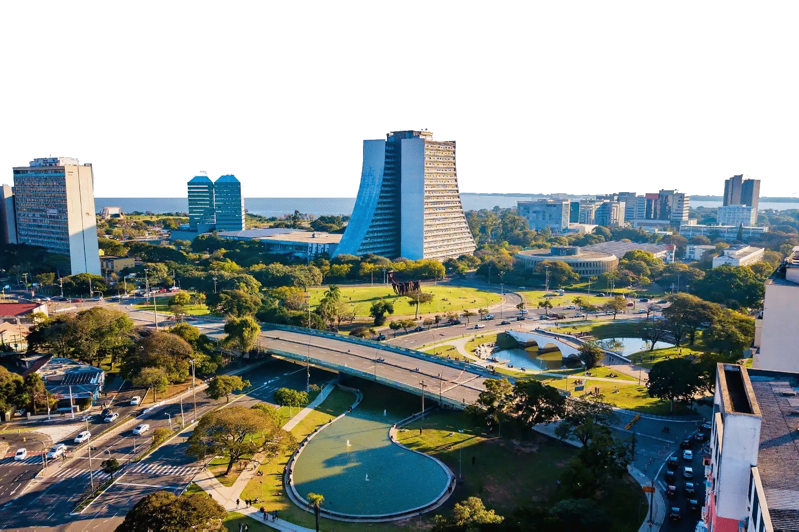

Porto Alegre
Sobre
Bem-vindo a Porto Alegre, a capital do Rio Grande do Sul e uma das cidades mais charmosas do Brasil! Localizada na região sul do país, Porto Alegre é famosa por sua cultura vibrante, gastronomia única e pessoas acolhedoras. Ao caminhar pelas ruas da cidade, você poderá apreciar sua arquitetura histórica e moderna, desde prédios coloniais até edifícios contemporâneos. Não deixe de visitar o Mercado Público, um dos principais pontos turísticos da cidade, onde você poderá experimentar as deliciosas iguarias da culinária gaúcha, como churrasco, chimarrão e queijos artesanais.
Além disso, Porto Alegre é rica em cultura, com diversas opções de museus, teatros e galerias de arte. O MARGS (Museu de Arte do Rio Grande do Sul) é um dos mais importantes da cidade, com uma coleção de obras de artistas gaúchos e brasileiros renomados. Por fim, não deixe de aproveitar o pôr do sol no famoso Parque da Redenção, um dos maiores e mais bonitos da cidade. Lá você pode fazer uma caminhada, andar de bicicleta, praticar esportes ou simplesmente relaxar em um ambiente tranquilo e natural. Porto Alegre é um destino imperdível para quem quer conhecer a cultura e a história do sul do Brasil, experimentar sua deliciosa gastronomia e aproveitar a hospitalidade de seu povo. para contar.
Atrações
CASA DE CULTURA MARIO QUINTANA
Local: Rua dos Andradas, 736 - Centro Histórico
Quando: Terça a Domingo, das 10h às 20h
É um é um importante centro cultural localizado na cidade de Porto Alegre, no estado do Rio Grande do Sul, Brasil. O edifício, em estilo art déco, que antes era um hotel, foi reformado e transformado em um espaço cultural em homenagem ao poeta e escritor Mario Quintana.
A Casa de Cultura promove diversas atividades culturais, como exposições de arte, apresentações teatrais, musicais e de dança, além de oficinas e cursos. Há também uma biblioteca, um cinema, um café e uma loja de souvenirs. A CCMQ está no coração cultural da cidade, próximo ao MARGS, Theatro São Pedro e Usina da Gasômetro e é um lugar ideal para mergulhar na cultura e história da cidade.
MUSEU DE ARTE DO RIO GRANDE DO SUL
Local: Praça da Alfândega, s/n - Centro Histórico
Quando: Terça a Domingo, das 10h às 19h
Fundado em 1954, o MARGS abriga uma coleção de arte contemporânea e moderna de artistas brasileiros e internacionais. São mais de 4 mil obras que incluem pinturas, esculturas, fotografias e instalações. O prédio é um atrativo à parte, construído em estilo neoclássico é considerado um dos mais belos da cidade. O MARGS também oferece exposições temporárias, palestras, cursos e atividades culturais para todos os públicos.
Localizado na Praça da Alfândega, o museu é uma visita obrigatória e já abrigou exposições de alguns dos artistas de maior relevância nacional e internacional, além de ser uma das principais sedes da Bienal do Mercosul.
FUNDAÇÃO IBERÊ CAMARGO
Local: Av. Padre Cacique, 2000 - Cristal
Quando: Quinta a Domingo, das 14h às 18h
A Fundação Iberê Camargo é um espaço cultural localizado em Porto Alegre, no estado do Rio Grande do Sul, Brasil. O prédio é uma obra arquitetônica premiada (venceu o Troféu Leão de Ouro da 8ª Bienal de Arquitetura de Veneza) projetada pelo renomado arquiteto português Álvaro Siza Vieira.
O local é dedicada ao trabalho do artista gaúcho Iberê Camargo e abriga uma grande coleção de suas obras, incluindo pinturas, gravuras e desenhos. Além disso, o espaço também oferece exposições temporárias de outros artistas contemporâneos, e oferece algumas das mais belas vistas da cidade, ponto ideal para ver o pôr do sol.
MUSEU DE CIÊNCIAS E TECNOLOGIA DA PUCRS
Local: Av. Ipiranga, 6681 - Partenon
Quando: Terça a Sexta, das 9h às 17h /
Sábado e Domingo, das 10h às 18h
O Museu de Ciências e Tecnologia da PUCRS um dos museus interativos de ciências naturais de destaque na América Latina, com atividades para todas as idades e áreas de experimento-atrações sobre o Universo, a Terra, Meio ambiente e o Homem, dentre outros.
A área de exposição permanente ao público conta com cerca de 700 experimentos interativos, cobrindo inúmeras áreas do conhecimento. O próprio visitante pode participar das experiências que resultaram no atual conhecimento científico. O acervo permanente inclui 5 milhões de peças.
MONUMENTO AOS AÇORIANOS
Local: Av. Loureiro da Silva, 1155 - Cidade Baixa
Quando: 24 horas / 7 dias
O Monumento aos Açorianos é uma obra de arte pública localizada em em homenagem à chegada, em 1752, dos primeiros sessenta casais açorianos que povoaram a cidade. A obra do escultor Carlos Tenius possui 17 m de altura por 24 m de comprimento em aço e lembra uma caravela, composta de corpos humanos entrelaçados, e tendo à frente uma figura alada que lembra o mitológico Ícaro e representa a Vitória.
No monumento existe o seguinte escrito: "Jamais sonhariam aqueles casais açorianos, que da semente que lançavam ao solo nasceria o esplendor desta cidade."
ESTÁTUA DO LAÇADOR
Local: Av. dos Estados, 1175 - São João
Quando: 24 horas / 7 dias
O Laçador, um dos cartões postais mais conhecidos da cidade, representa um gaúcho pilchado, vestindo trajes típicos da região, com destaque para o chapéu de abas largas, a indumentária de couro e um laço na mão direita, pronto para efetuar um lance, técnica utilizada na lida com o gado.
A escultura de 5 metros de altura foi criada pelo artista Antônio Caringi e inaugurada em 20 de setembro de 1958, como parte das comemorações da Semana Farroupilha, antes localizada próxima a Orla do Guaíba atualmente se encontra na Avenida do Estado próxima ao Aeroporto Internacional.
CAIS EMBARCADERO
Local: Av. Mauá, 1050 - Armazém A7 - Centro Histórico
Quando: Terça a Domingo, das 11h às 22h30
O Cais Embarcadero está situado às margens do Lago Guaíba e oferece uma vista espetacular do lago, das ilhas e da orla da cidade. É um pólo gastronômico, oferecendo opções para todos os gostos.
Uma das principais atrações do Cais Embarcadero é o passeio de barco, que permite ao visitante explorar o lago e suas ilhas. Os passeios são oferecidos por diversas empresas e geralmente duram cerca de duas horas. Além disso, o local conta com diversas atividades e eventos ao longo do ano, como shows, exposições e apresentações artísticas.
PARQUE FARROUPILHA
Local: Av. João Pessoa, s / nº - Farroupilha
Quando: 24 horas / 7 dias
O Parque Farroupilha, também conhecido como Parque da Redenção, é um dos mais famosos e populares parques da cidade. É um lugar de lazer e convívio para moradores locais e turistas, para fazer caminhadas, corridas, andar de bicicleta ou simplesmente relaxar em meio à natureza.
O parque possui uma área verde extensa, com mais de 37 hectares, repleta de árvores, gramados, lagos, jardins temáticos, além de abrigar o Anfiteatro Araújo Viana, o Monumento ao Expedicionário e várias esculturas.
ORLA MOACYR SCLIAR
Local: Av. Edvaldo Pereira Paiva - Praia de Belas
Quando: 24 horas / 7 dias
A Orla Moacyr Scliar é um espaço público às margens do rio Guaíba. A orla conta com cerca de 3,2 km de extensão e apresenta uma vista privilegiada do pôr do sol, além de contar com ciclovia, calçadão para caminhadas, áreas de lazer para crianças e adultos, bares e restaurantes.
A Orla se apresenta como um hub turístico, nela está localizada a Usina do Gasômetro, Cais Embarcadero, além da proximidade de monumentos e locais de interesses, como o Parque Harmonia, onde acontece anualmente o Acampamento Farroupilha, o Monumento das Cuias, o Monumento aos Açorianos, o Anfiteatro Pôr-do-Sol e o Parque Marinha do Brasil.
PARQUE MOINHOS DE VENTO
Local: R. Comendador Caminha, s/n - Moinhos de Vento
Quando: 24 horas / 7 dias
Também conhecido como "Parcão", o local é um ambiente agradável para caminhadas, corridas, piqueniques e outras atividades ao ar livre. Além disso, há diversas estruturas disponíveis para o público, como quadras de esporte, parquinhos infantis, pista de skate, espaço para exercícios físicos, quiosques para lanches e bebidas, banheiros e até uma biblioteca.
O destaque do é o famoso lago, que abriga diversas espécies de aves, como cisnes e patos, e é um lugar ideal para observação da natureza e para passeios de barco a pedal. A escultura de moinho de vento e seu reflexo no lago formam um dos principais cartões postal da cidade.
MONUMENTO A JÚLIO DE CASTILHOS
Local: Praça Mal. Deodoro, 4460 - Centro Histórico
Quando: 24 horas / 7 dias
O Monumento a Júlio de Castilhos é uma das mais icônicas esculturas de Porto Alegre, localizado em uma praça com o mesmo nome, no coração da cidade, e é um monumento em homenagem a um dos mais importantes líderes políticos do estado.
A escultura retrata Júlio de Castilhos em tamanho real, montado em um cavalo e segurando uma espada, como símbolo de liderança e poder. A base do monumento é ricamente ornamentada e conta com inscrições em latim, que homenageiam a figura de Castilhos e a história do Rio Grande do Sul.
MERCADO PÚBLICO DE PORTO ALEGRE
Largo Jorn. Glênio Péres, 1 - Centro Histórico
Quando: Segunda a Sexta das 7h30 às 19h30/ Sábado das 7h30 às 18h30
O Mercado Público de Porto Alegre é uma das construções mais tradicionais da cidade, está em funcionamento desde 1869, e é parada obrigatória. Com mais de 100 lojas que vendem mais de 100 mil itens, incluindo produtos regionais e especiarias.
O edifício também conta com restaurantes tradicionais,oferecendo cardápios exóticos, além da tradicional salada de frutas com sorvete.